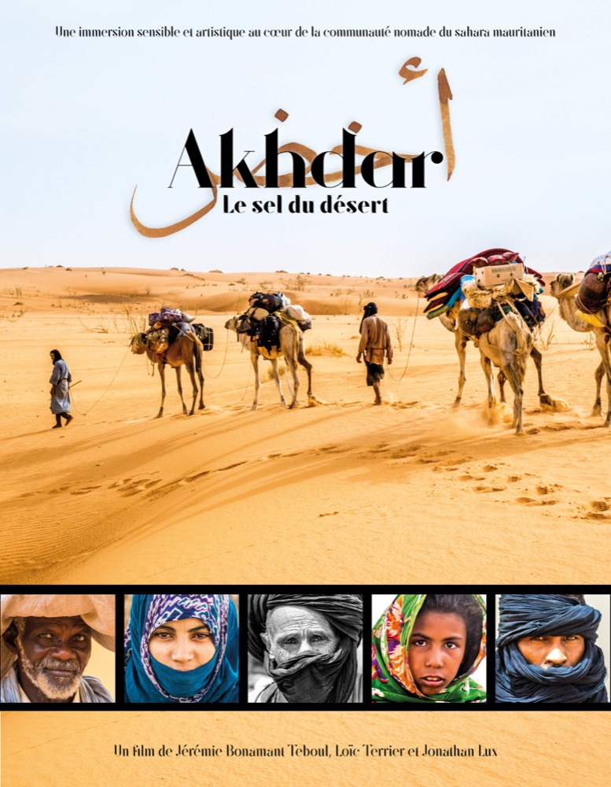

Akhdar, le sel du désert
Un documentaire artistique avec l'illustrateur Jérémie Bonamant, sur la route du sel, des mines de la côte jusqu'aux villages nomades. On y suit Ali, chamelier des grandes méharées, dans un territoire où la vie est si fragile.
- SupportDVD + bonus
- CoffretDigifile cartonné